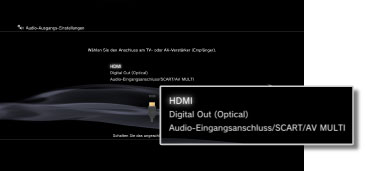
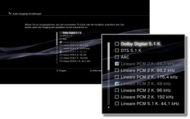

Einstellungen > Sound-Einstellungen > Audio-Ausgangs-Einstellungen
Audio-Ausgangs-Einstellungen
Sie können Audio-Ausgangs-Einstellungen für das System vornehmen. Diese Einstellungen werden hauptsächlich verwendet, wenn das System an Audio-Geräte angeschlossen wird, die die digitale Audio-Ausgabe unterstützen, wie z. B. AV-Verstärker (Receiver) für Home-Entertainment-Systeme.
1. |
Überprüfen Sie, welche Formate von Ihrem Audio-Gerät unterstützt werden. |
|||||||||||||||||||||||
|---|---|---|---|---|---|---|---|---|---|---|---|---|---|---|---|---|---|---|---|---|---|---|---|---|
2. |
Wählen Sie |
|||||||||||||||||||||||
3. |
Wählen Sie [Audio-Ausgangs-Einstellungen]. |
|||||||||||||||||||||||
4. |
Wählen Sie den Eingangsanschluss am Audio-Gerät aus. Welche Kanalanzahl und Audioformate unterstützt werden, hängt vom verwendeten Anschluss ab. 
|
|||||||||||||||||||||||
5. |
Wählen Sie die Audio-Ausgangsformate aus.  |
|||||||||||||||||||||||
6. |
Überprüfen Sie Ihre Einstellungen. |
|||||||||||||||||||||||
7. |
Speichern Sie Ihre Einstellungen. |
|||||||||||||||||||||||

 -Taste drücken.
-Taste drücken.Anmerkungen
- Standardmäßig wird Ton mit [Lineare PCM 2 K.] an allen Ausgängen ausgegeben. Wenn Sie die Audio-Ausgangseinstellungen ändern, wird der Ton nur über die eingestellten Anschlüsse ausgegeben.
- Wenn Sie die Audio-Ausgangs-Einstellungen ändern, kann das System Ton nicht mehr über mehrere Ausgänge gleichzeitig ausgeben lassen. Wenn das System beispielsweise über ein HDMI-Kabel an ein Fernsehgerät und über ein optisches Digitalkabel an ein Audiogerät angeschlossen ist und Sie unter [Audio-Ausgangs-Einstellungen] die Option [Digital Out (Optical)] einstellen, wird vom Fernsehgerät kein Ton mehr ausgegeben. Wenn Ton vom Fernsehgerät ausgegeben werden soll, ändern Sie die Einstellung in [HDMI] oder wählen Sie
 (Einstellungen) >
(Einstellungen) >  (Sound-Einstellungen) > [Audio-Mehrfachausgang] und setzen Sie die Option auf [Ein].
(Sound-Einstellungen) > [Audio-Mehrfachausgang] und setzen Sie die Option auf [Ein]. - Wenn Sie in Schritt 5 [Lineare PCM 2 K. 88,2 kHz] oder [Lineare PCM 2 K. 176,4 kHz] wählen, setzt der Ton möglicherweise aus oder wird bei einigen Geräten gar nicht ausgegeben.
- Wenn Sie ein HDMI-Kabel verwenden, wird bei Software im PlayStation®2- und PlayStation®-Format nur Ton im Format [Lineare PCM 2 K.] ausgegeben. Wenn Sie Dolby Digital- oder DTS-Ton ausgeben wollen, müssen Sie das PS3™-System und das Audiogerät über ein optisches Digitalkabel verbinden und unter [Audio-Ausgangs-Einstellungen] auf [Digital Out (Optical)] umschalten.
- Wenn ein Gerät, das nicht mit dem HDCP-Standard (High-Bandwidth Digital Content Protection) kompatibel ist, über ein HDMI-Kabel an das System angeschlossen ist, können Bild und/oder Ton vom System nicht ausgegeben werden.
Hinweise
- Einige Softwaretitel im PlayStation®2- oder PlayStation®-Format werden auf dem PS3™-System anders als auf einem PlayStation®2- oder PlayStation®-System ausgeführt oder sie werden auf dem PS3™-System nicht ordnungsgemäß ausgeführt.
- Außerdem kann Software im PlayStation®2-Format auf einigen PS3™-Systemen nicht ausgeführt werden. Näheres dazu finden Sie unter [Typen abspielfähiger Discs] oder auf der SCE-Website für Ihre Region. Sie können auch in der Dokumentation zum PS3™-System nachschlagen.